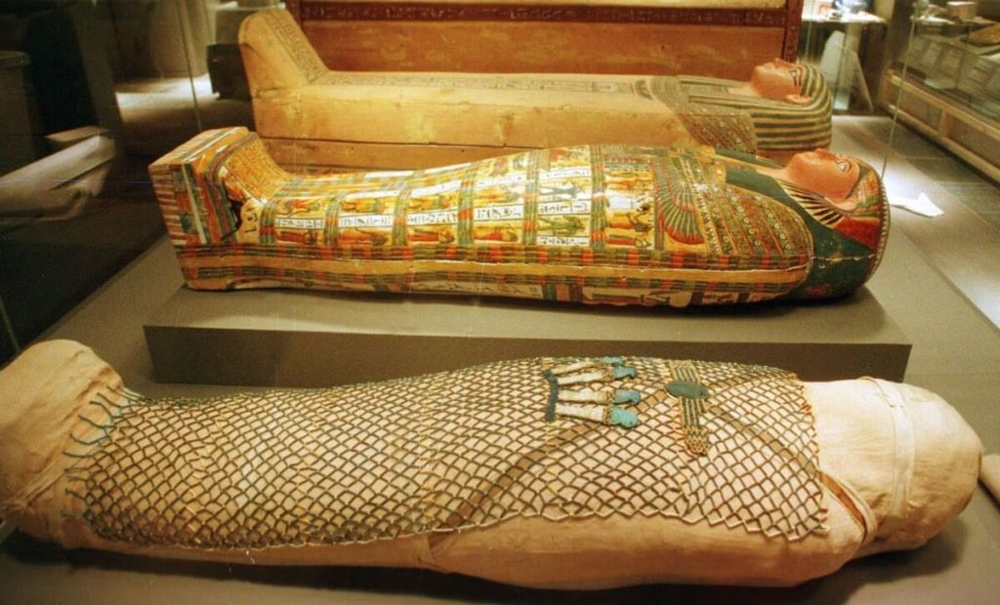
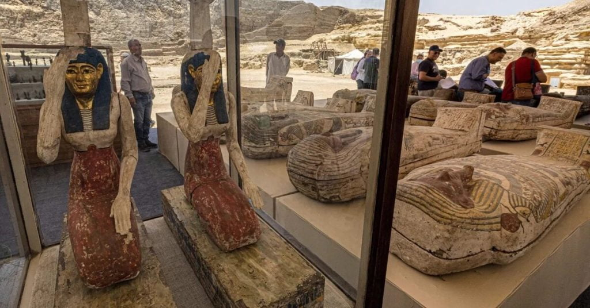

ဒီ ရုပ်ကြွင်းကို ရှေးအကျဆုံး ပိရမစ် တစ်ခုဖြစ်တဲ့ လှေကားထစ် ပိရမစ် (Step Pyramid) ကြီးရဲ့ အနီးက ၁၅ မီတာ အနက်ရှိတဲ့ တွင်းကြီး တစ်ခုရဲ့ အောက်ခြေမှာ တူးဖေါ် တွေ့ရှိခဲ့တာ ဖြစ်ပါတယ်။ ဒီ လှေကားထစ် ပိရမစ် ဟာ ဆက်ကရာ (Saqqara) ဒေသမှာ တည်ဆောက် ခဲ့တဲ့ ရှေးအကျဆုံး ပိရမစ်ကြီး တစ်ခု ဖြစ်ပါတယ်။
ဆက်စပ်ဆောင်းပါး – ပိရမစ် တွေကို ဘယ်သူတွေ တည်ဆောက်ခဲ့ သလဲ
ဒီ ဆက်ကရာ ဒေသဟာ အီဂျစ် နိုင်ငံရဲ့ မြို့တော် ကိုင်ရိုမြို့ (Cairo) နဲ့ သိပ်မဝေးတဲ့ အရပ်ဒေသ တစ်ခု ဖြစ်ပါတယ်။ ဒီ ဒေသမှာ အီဂျစ် ပဉ္စမ နဲ့ ဆဌမ မင်းဆက် (fifth and sixth dynasty) တွေရဲ့ လက်ထက်က ဂူသင်္ချိုင်း အများအပြားကို သိပ်မကြာမီ ကမှ ရှေးဟောင်း သုတေသီတွေ ရှာဖွေ တွေ့ရှိ ထားကြတာပါ။
“ဟီကာရှီပီစ်” လို့ အမည်ရတဲ့ ရှေးအီဂျစ်တစ်ယောက်ရဲ့ မံမီ ရုပ်ကြွင်းကို ထုံးကျောက် ခေါင်းတလားထဲ ထည့်သွင်းပြီး အင်္ဂတေနဲ့ ပိတ်ကာ မြှုပ်နှံ ထားခဲ့တာကို ရှောဖွေ တွေ့ရှိ ခဲ့ကြတာ ဖြစ်ပါတယ်။

ဒီ မံမီရုပ်ကြွင်း အပြင် လှပစွာ ထွင်းထုထားတဲ့ ကျောက်ရုပ်တု ၁၂ ခု ကိုလဲ အတူတကွ ရှာဖွေ တွေ့ရှိ ခဲ့ကြပါတယ်။
ဆက်စပ်ဆောင်းပါး – ရှေးအီဂျစ် နတ်ဘုရားကျောင်းအောက် ဥမင်လှိုဏ်ခေါင်းကြီး တစ်ခု ရှာတွေ့
ဒီ ဆက်ကရာ ဒေသက ဂူသင်္ချိုင်း တွေအနက်က အရေး အပါဆုံး သင်္ချိုင်းကတော့ ခနူမ်ဂျီဒက်ဖ် (Khnumdjedef) အမည်ရ ပုဂ္ဂိုလ်ရဲ့ ဂူသင်္ချိုင်းပဲ ဖြစ်ပါတယ်။ သူဟာ အသက်ရှင် စဉ်က အစိုးရ အရာရှိ တွေကို စစ်ဆေးရတဲ့ စစ်ဆေးရေး မှူးချုပ် ဖြစ်သလို မူးမတ်တွေကို အုပ်ချုပ်တဲ့ အုပ်ချုပ်ရေး မှူးလဲ ဖြစ်ပါတယ်။ ဒါ့အပြင် ပဉ္စမ မင်းဆက် ရဲ့ နောက်ဆုံး ဘုရင် ဖြစ်တဲ့ ယူနတ်စ် (Unas) ရဲ့ ပိရမစ် ဂူသင်္ချိုင်းတော်ရဲ့ ဘုန်းတော်ကြီး လဲ ဖြစ်ပါတယ်။
သူ့ရဲ့ ဂူသင်္ချိုင်း နံရံမှာတော့ သူ အသက်ရှင် စဉ်က နေ့စဉ် လုပ်ဆောင်တဲ့ လုပ်ငန်းဆောင်တာ တွေကို လှပတဲ့ ပန်းချီကား တွေ အဖြစ် ရေးချယ် ထားပါတယ်။

နောက်ထပ် ၁၀ မီတာ အနက်ရှိတဲ့ တွင်းတစ်ခု ထဲမှာတော့ သစ်သား နဲ့ ကျောက် ပန်းပုရုပ်တွေ နဲ့အတူ ကျောက် ခေါင်းတလား တစ်ခုကိုလဲ ရှာဖွေ တွေ့ရှိ ခဲ့ပါတယ်။ အဲ့သည် ခေါင်းတလားထဲ ပေါ်မှာ ရေးထိုးထားတဲ့ စာအရ ဒီ ခေါင်းတလား ထဲမှာ မြှုပ်နှံထားတဲ့ မံမီရုပ်ကြွင်းဟာ ဖီတက် (Fetek) အမည်ရသူရဲ့ မံမီရုပ်ကြွင်း ဖြစ်တယ် ဆိုတာကို သိရှိ ကြရပါတယ်။
ဆက်စပ်ဆောင်းပါး – အီဂျစ်မံမီ တွေကို ဘယ်လို ဆေးစိမ်ခဲ့သလဲ
ဒီ ဆက်ကရာ ဒေသမှာ ၂၀၁၈ ခုနှစ်က စလို့ အရေးပါတဲ့ ရှေးဟောင်း သမိုင်း အထောက်အထား အများအပြားကို ရှာဖွေ တွေ့ရှိ ခဲ့ပါတယ်။ ဒီအထဲမှာ ၂၀၁၉ ခုနှစ်က ရှာဖွေ တွေ့ရှိခဲ့တဲ့ ရာနဲ့ချီတဲ့ မံမီရုပ်ကြွင်းတွေ နဲ့ ၂၀၁၈ တုန်းက တွေ့ခဲ့တဲ့ တော်ဝင်ဘုန်းတော်ကြီး ဝါတိုင် ရဲ့ နှစ် ၄,၄၀၀ သက်တမ်းရှိ အုတ်ဂူတို့လဲ အပါအဝင် ဖြစ်ပါတယ်။
သိပ်မကြာမီ တုန်းကလဲ ကိုယ်တွင်း အင်္ဂါတွေကို ရွှေနဲ့ ဖုံးအုပ်ထားတဲ့ နှစ် ၂,၃၀၀ သက်တမ်းရှိ မံမီရုပ်ကြွင်း တစ်ခုကို ရှာဖွေ တွေ့ရှိ ခဲ့ပါသေးတယ်။ ဒီ မံမီကို CT ကွန်ပြူတာ ဓါတ်မှန် ရိုက်ကြည့် ခဲ့ရာမှာ သူ့ရဲ့ ကိုယ်တွင်း အင်္ဂါတွေကို ရွှေရွက်လေး တွေနဲ့ အုပ်ထားတာကို ရှာဖွေ တွေ့ရှိခဲ့တာ ဖြစ်ပါတယ်။
